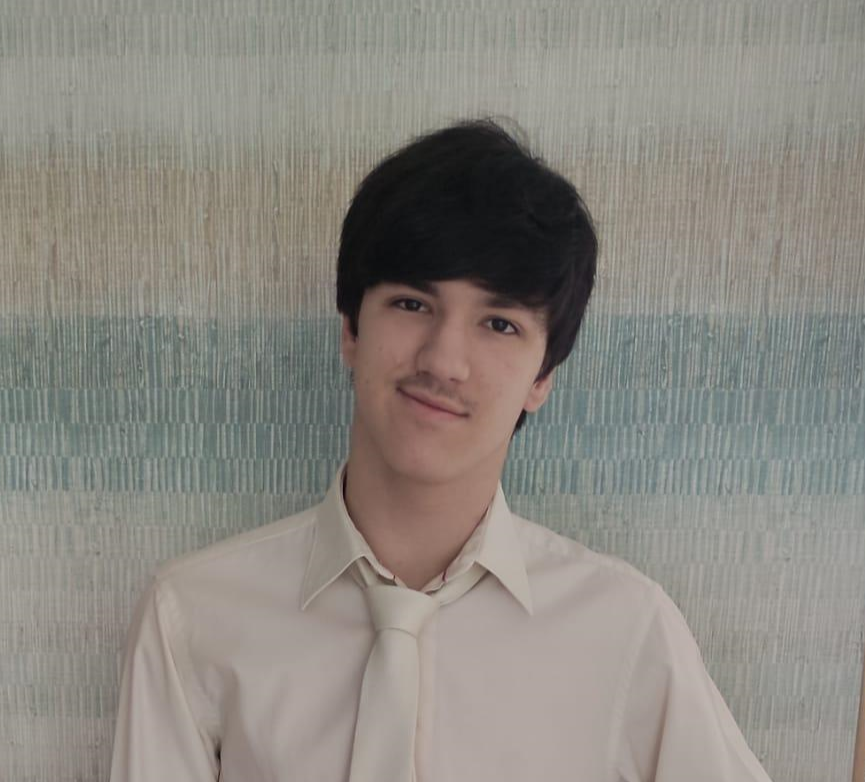

Présentation
Bonjour je m'appelle Tiago Labro et j'ai 18 ans.

Je suis passioné d'informatique depuis le collège. Les langages que je suis entrain d'apprendre et dans lesquels je progresse sont :
l'HTML, le CSS, JavaScript, le CMS (WordPress) ainsi que Python.
Mon objectif est de faire en sorte de créer la forme, le fond
ainsi qu'animer des projets comme des sites web ou des applications à partir de tous ces langages.
Mon rêve est de créer mon propre jeu vidéo.
Me contacter
- supertiago.260@gmail.com
- 07 70 00 05 99
- 5 rue de la raizière, 60700 Fleurines